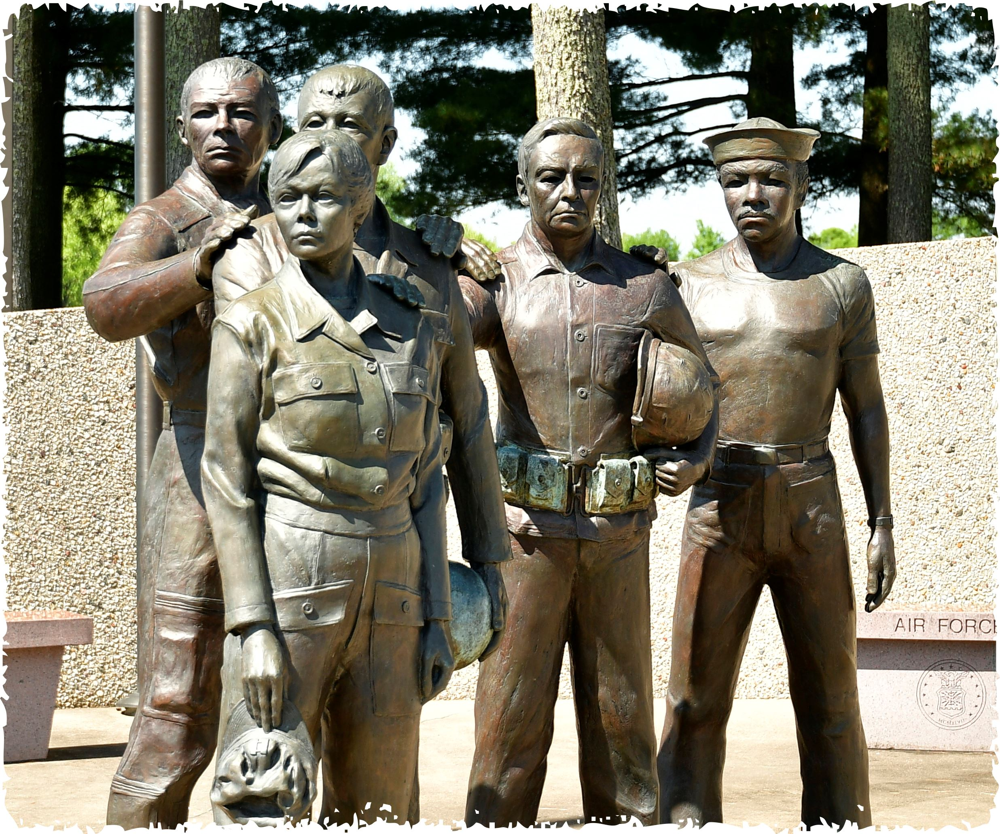
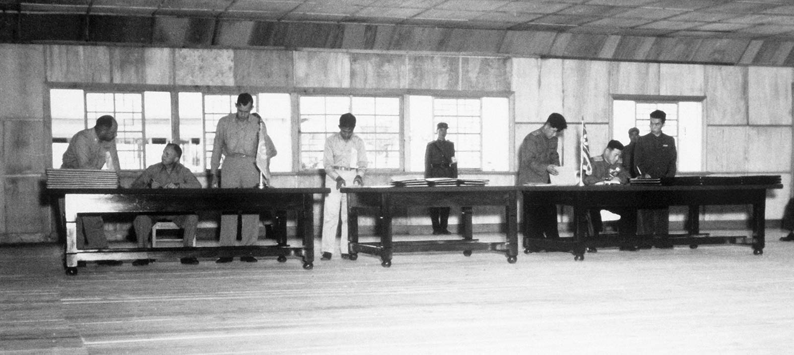
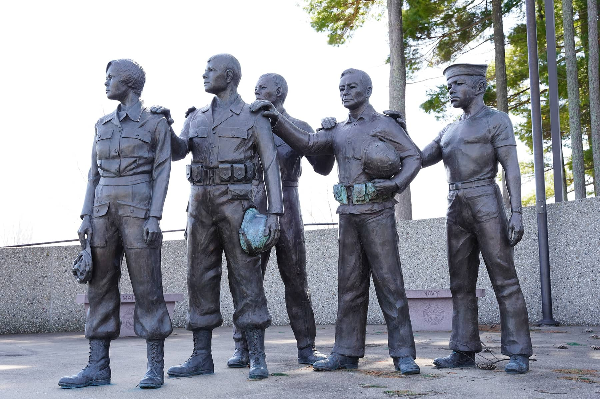

801 Wisconsinites did not come home.

Memorial figures and sources
The Wisconsin Korean War Veterans Memorial commemorates 801 Wisconsin residents killed in the war. The connection is personal—and the conflict remains unresolved.
The memorial's account of Wisconsin's service.
The memorial’s figures face east, toward Korea.
The memorial records 132,000 Wisconsinites who served, 4,286 wounded, and 111 prisoners of war. Its figure of 84 missing dates to the memorial's 1993 dedication; it is not a current count. Identification work continues. Plover's memorial history.
The U.S. Department of Defense's historical total is 36,574 U.S. military deaths in the Korean War. The war is often called “The Forgotten War.” Wisconsin's memorial in Plover and the designation of U.S. Highway 51 as the Korean War Veterans Memorial Highway keep its memory visible.
A ceasefire. No peace treaty.

The armistice and its source
The July 27, 1953 armistice suspended hostilities. South Korea did not sign it. No peace treaty has replaced it.
That distinction helps explain why the peninsula's military and diplomatic choices remain consequential today. Read the armistice at the U.S. National Archives.
One who came home.

PFC Charles Dickman of Cashton was accounted for in 2023.
Dickman, Red Cloud and Ingman
PFC Charles A. Dickman of Cashton was seventeen when he went missing on July 12, 1950, north of Chochiwon. He served with Company M, 21st Infantry Regiment, 24th Infantry Division.
His remains were buried as an unidentified soldier in Honolulu. They were exhumed on July 15, 2019. Dental and anthropological analysis, together with a chest radiograph comparison, helped establish his identity. DPAA accounted for him on June 20, 2023; his burial in Cashton was scheduled for October 21, 2023. DPAA's identification announcement.
Two Wisconsin Medal of Honor stories
Cpl. Mitchell Red Cloud Jr.
Ho-Chunk Nation · Hatfield, Wisconsin · November 5, 1950
Red Cloud detected an approaching Chinese attack, sounded the alarm, and fired from his exposed position. After he was wounded, he refused evacuation and continued fighting until he was killed. His resistance gave his company time to consolidate its defenses. He was twenty-five.
Sgt. Einar H. Ingman Jr.
Milwaukee / Tomahawk, Wisconsin · February 26, 1951
Ingman took command of two squads near Malta-ri and attacked two machine-gun positions. Despite severe wounds from a grenade and gunfire, he continued the assault before losing consciousness. He returned to Tomahawk and worked at a paper company for thirty-two years.